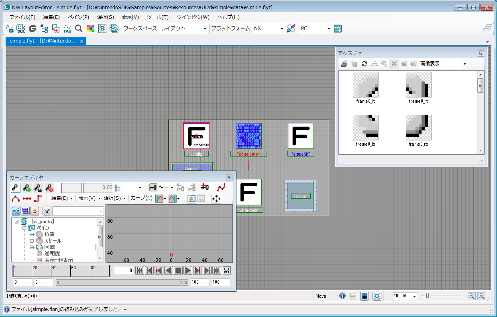

本ドキュメントでは NintendoWare のレイアウト開発環境について説明します。
レイアウト開発環境とは
レイアウト開発環境とは、ステータス表示やメニュー画面などの主に2Dで描画される部分を、効率的に開発できるように設計されたシステムです。
付属のツール LayoutEditor で視覚的に要素を配置し、作成した画面をそのままプログラム側に組み込むことができます。
ボタンやアニメーションなどの豊富な機能が備わっており、高度な画面も容易に作成できます。

図1. レイアウトエディタの編集画面
構成
レイアウトには以下の内容が含まれています。
-
LayoutEditor
- デザイナがデータ作成に利用する編集ツールです。PC 上で動作します。
- 画像データ(tga 形式)や文字のフォントを配置し、アニメーションを設定して、ゲーム内のユーザーインターフェース等で使用する 2D グラフィックスを作成することができます
- 画像データ自体の作成はできないので、別途 Photoshop 等の編集ソフトを準備してください
-
レイアウトビューア
- LayoutEditor で作ったデータを表示確認するプログラムです
- 実機用ビューアとPC用ビューアが存在します
-
レイアウトライブラリ(nn::ui2d)
- LayoutEditor で作ったデータを表示したり制御するために、プログラマがゲームプログラムに組み込んで使うライブラリです。
- カメラなど、基本的な描画の考え方は通常の 3D グラフィックスと変わりありませんが、平面の四角形ポリゴンを扱うことに特化していることが特徴です。Z 方向から正射影で描画すれば、四角形を配置する2Dグラフィックスライブラリと同じように扱うことができます。
- ランタイムのシェーダは予め用意された中で最適なシェーダが選択されるようになっており、ライブラリユーザーがシェーダコードを記述する必要はありません。
- カスタムビューアーを作成するのに便利なビューアーライブラリが付属しています。nn::ui2d::viewer 名前空間に存在します。
-
レイアウトバイナリコンバータ
- LayoutEditor で作ったデータをレイアウトライブラリが扱うバイナリファイルに変換するプログラムです。PC 上で動作します。
-
レイアウトアーカイバ
- レイアウトコンバータでコンバートしたデータをまとめて、レイアウトライブラリが扱える形式にするプログラムです。PC 上で動作します。
用語
レイアウト／用語 をご覧ください。
関連モジュール
フォント(nn::font)
レイアウトは、フォントモジュールと連携して文字列を表示することができます。フォントについての詳細は 「オーバービュー」をご覧ください。
使い始めるには
はじめてレイアウトをお使いになる方は、スタートアップを参照してください。
プログラミングの概要
レイアウト／ランライムオーバービュー をご覧ください。